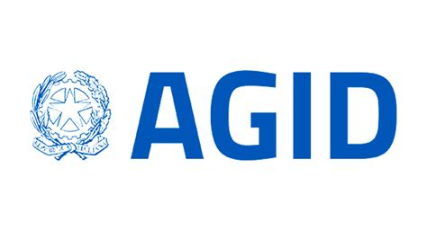

Come la tecnologia sta cambiando la Pubblica Amministrazione.
L’obiettivo dell'E-governance è rendere la Pubblica Amministrazione la migliore “alleata” di cittadini e imprese, con un’offerta di servizi sempre più efficienti e facilmente accessibili.Per fare ciò, da un lato si agisce sugli aspetti di “infrastruttura digitale”, spingendo la migrazione al cloud delle amministrazioni, accelerando l’interoperabilità tra gli enti pubblici, snellendo le procedure secondo il principio “once only” (secondo il quale le pubbliche amministrazioni devono evitare di chiedere a cittadini ed imprese informazioni già fornite in precedenza) e rafforzando le difese di cybersecurity. Dall’altro lato vengono estesi i servizi ai cittadini, migliorandone l’accessibilità e adeguando i processi prioritari delle Amministrazioni Centrali agli standard condivisi da tutti gli Stati Membri dell'Unione Europea. Per rendere tutto questo realmente funzionale alla transizione digitale del paese, questi interventi sono accompagnati da inizative di supporto per l’acquisizione e l’arricchimento delle competenze digitali. La trasformazione digitale della Pubblica Amministrazione (PA) segue un approccio “cloud first”, orientato alla migrazione dei dati e degli applicativi informatici delle singole amministrazioni verso un ambiente cloud. Un cambiamento che porterà a servizi più sicuri e integrati. Il processo consentirà di razionalizzare e consolidare molti dei data center oggi distribuiti sul territorio, a partire da quelli meno efficienti e sicuri. Ad oggi, il 95% dei circa 11mila data center utilizzati dagli enti pubblici italiani presenta carenze nei requisiti minimi di sicurezza, affidabilità, capacità elaborativa ed efficienza. Sul sito PA digitale 2026 è possibile consultare in dettaglio le opportunità offerte dal PNRR dedicate alla digitalizzazione della Pubblica Amministrazione: fondi allocati, beneficiari e modalità di accesso alle misure. |
|  |
L’Agenzia per l'Italia Digitale è l’agenzia tecnica della Presidenza del Consiglio che ha il compito di garantire la realizzazione degli obiettivi dell’Agenda digitale italiana e contribuire alla diffusione dell'utilizzo delle tecnologie dell'informazione e della comunicazione, favorendo l'innovazione e la crescita economica. AgID ha il compito di coordinare le amministrazioni nel percorso di attuazione del Piano Triennale per l’informatica della Pubblica amministrazione, favorendo la trasformazione digitale del Paese. AgID sostiene l’innovazione digitale e promuove la diffusione delle competenze digitali anche in collaborazione con le istituzioni e gli organismi internazionali, nazionali e locali. |
Lo SPID, acronimo di Sistema Pubblico di Identità Digitale, rappresenta un’innovativa soluzione per semplificare l’accesso ai servizi online della Pubblica Amministrazione. L’utilizzo dello SPID porta con sé numerosi vantaggi, tra cui la riduzione della carta e della burocrazia, la maggiore efficienza nell’erogazione dei servizi e la possibilità di accedere a tali servizi in qualsiasi momento e da qualsiasi luogo. Inoltre, la sicurezza offerta da questo sistema è garantita da rigorosi protocolli di autenticazione e crittografia, che proteggono i dati personali degli utenti da possibili tentativi di accesso non autorizzato. Con SPID, la sicurezza dei propri dati personali è garantita, in quanto l’identità dell’utente viene verificata attraverso un processo rigoroso e certificato. Inoltre, grazie a SPID, le operazioni online si svolgono in modo rapido ed efficiente, risparmiando tempo prezioso. In conclusione, SPID offre un’esperienza utente ottimale, semplificando l’accesso ai servizi online in modo sicuro e veloce. In sintesi, SPID offre la comodità di un accesso unico a numerosi servizi online, garantendo al contempo la protezione dei dati personali. Grazie a SPID, gli utenti possono evitare la complicazione di dover gestire numerose password diverse e possono accedere ai servizi pubblici online in modo rapido ed efficace. In questo modo, SPID si distingue per la sua combinazione di semplicità, sicurezza e velocità, offrendo un’esperienza utente ottimale in un contesto digitale sempre più importante. Gli utenti che utilizzano lo SPID devono essere consapevoli dei rischi associati, tra cui il phishing, una truffa online diffusa che mira a ottenere informazioni personali e finanziarie. Questo tipo di furto d’identità digitale è particolarmente pericoloso poiché l’utente viene ingannato a fornire i propri dati a un ente falso, compromettendo la propria sicurezza online. È importante essere vigili e consapevoli per evitare di cadere vittima di queste truffe.
La digitalizzazione della Pubblica Amministrazione, tuttavia, minaccia di aumentare le disparità, il cosiddetto Digital Divide. Tra le persone maggiormente sfavorite ci sono gli anziani che, a differenza dei nativi digitali, hanno dovuto confrontarsi con le nuove tecnologie già in età avanzata.